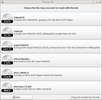
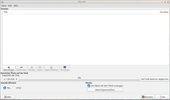
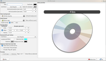
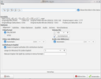

DeVeDe NG
Dieser Artikel wurde für die folgenden Ubuntu-Versionen getestet:
Ubuntu 16.04 Xenial Xerus
Zum Verständnis dieses Artikels sind folgende Seiten hilfreich:
Mit der Software DeVeDe NG  gibt es eine DVD-Authoring Software für Linux und Windows, mit der eine VCD-, SVCD-, DVD-, CVD- (gleichwertig zur SVCD, aber mit geringerer Auflösung; speziell für China entwickelt) und DivX-Medien ohne viel Aufwand erstellt werden kann. Das Programm basiert auf Python 3 und GTK 3 und bringt AVI, MP4, MPG und viele andere Videoformate in das DVD-Format.
gibt es eine DVD-Authoring Software für Linux und Windows, mit der eine VCD-, SVCD-, DVD-, CVD- (gleichwertig zur SVCD, aber mit geringerer Auflösung; speziell für China entwickelt) und DivX-Medien ohne viel Aufwand erstellt werden kann. Das Programm basiert auf Python 3 und GTK 3 und bringt AVI, MP4, MPG und viele andere Videoformate in das DVD-Format.
DeVeDe NG ist der Nachfolger von DeVeDe und kann auch mit MKV, MP4 mit H.264/AAC sowie insbesondere HD-Material umgehen.
Installation¶
 DeVeDe NG ist nicht in den offiziellen Paketquellen enthalten.
DeVeDe NG ist nicht in den offiziellen Paketquellen enthalten.
Fremdpaket¶
Die aktuelle Version findet man auf der Projektseite  als DEB-Paket. Dieses wird heruntergeladen und manuell installiert [1].
als DEB-Paket. Dieses wird heruntergeladen und manuell installiert [1].
Hinweis!
Fremdpakete können das System gefährden.
Im Rahmen der Installation werden weitere abhängige Pakete wie die Videoplayer MPlayer und Mpv und die Kommandozeilen-Werkzeuge FFmpeg, dvdauthor und vcdimager installiert.
Verwendung¶
DeVeDe NG kann über das Terminal mit dem Befehl "devede_ng.py" oder bei Ubuntu-Varianten mit einem Anwendungsmenü unter "Unterhaltungsmedien -> DevedeNG" bzw. "Multimedia -> DevedeNG" gestartet werden [2].
|  |
| Start |
|  |
| Hauptmenü |
|  |
| Menü-Eigenschaften |
|  |
| Optionen |
Im Startfenster kann man auswählen, welche Art von Video-Disk erstellt werden soll. Als Beispiel wird hier eine Video-DVD erzeugt. Die Dialoge sind bei anderen Medien identisch beziehungsweise sehr ähnlich aufgebaut.
Danach gelangt man ins Hauptfenster und wählt unter "Dateien -> Hinzufügen" die Videodateien aus. Mit "Benutzter Platz auf der Disk" wird die Platzbelegung in Prozent angezeigt. Falls die Auslegung über 100% beträgt, kann man "Auf Disk-Speicher abgleichen" auswählen, wodurch die DVD-Größe angepasst wird.
Als "Ausgabe Video Format" stellt man "PAL" ein (Standard in Deutschland).
Man kann unter "Menü-Eigenschaften" ein eigenes DVD-Menü erstellen mit vielen Möglichkeiten. Eine DVD ohne Menü ist allerdings auch möglich.
Klickt man auf die Datei und wählt "Eigenschaften", so hat man noch mehrere Optionen zur Auswahl. Unter anderem ist es zum Beispiel möglich, die Video und die Audio-Rate einzustellen, die Kapitellänge zu bestimmen, Untertitel hinzuzufügen, die Größe und das Seitenverhältnis zu bestimmen und vieles mehr.
Im Hauptmenü unter "Edit > Einstellungen" kann man noch einige Voreinstellungen vornehmen, zum Beispiel der Player zur Vorschau, womit die ISO erstellt wird und das Brennprogramm.
Ist man mit allen Optionen fertig, kann man auf "Vor" klicken. Im nächsten Fenster wählt man den Speicherort, wo der DVD-Baum mit den Ordnern VIDEO_TS und AUDIO_TS sowie ein MPG- und eine ISO-Datei erstellt wird. Um am Ende das Ganze jetzt auf einen Rohling zu bringen, braucht man ein Brennprogramm. Unter Ubuntu wird dem Benutzer angeboten, direkt eine DVD zu brennen (direkte Übergabe an Brennprogramm, keine separater Start durch den Nutzer notwendig).
Transcoding deaktivieren¶
DeVeDe NG verfügt über eine Option, um DVD-konforme Videodateien von einer Enkodierung auszunehmen und dadurch eine zeitaufwendige Umwandlung zu umgehen. Dazu klickt man auf die Datei und wählt unter "Eigenschaften" im Reiter "Verschiedenes" die Option "Diese Datei ist bereits eine DVD/xCD-konforme MPEG-PS-Datei".
Problemlösung¶
Falls nach der Installation DeVeDe NG nicht starten sollte, kann es sein, das nicht alle Abhängigkeiten automatisch installiert worden sind. Ein Paket, das nicht automatisch dabei installiert wird, ist gir1.2-gtk-3.0. Dieses ist in den offiziellen Paketquellen enthalten
gir1.2-gtk-3.0
 mit apturl
mit apturl
Paketliste zum Kopieren:
sudo apt-get install gir1.2-gtk-3.0
sudo aptitude install gir1.2-gtk-3.0
und kann über die Paketverwaltung nachinstalliert werden.
 Programmübersicht
Programmübersicht- Erstellt mit Inyoka
-
 2004 – 2017 ubuntuusers.de • Einige Rechte vorbehalten
2004 – 2017 ubuntuusers.de • Einige Rechte vorbehalten
Lizenz • Kontakt • Datenschutz • Impressum • Serverstatus -
Serverhousing gespendet von